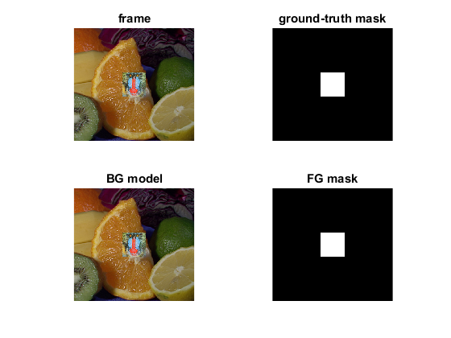
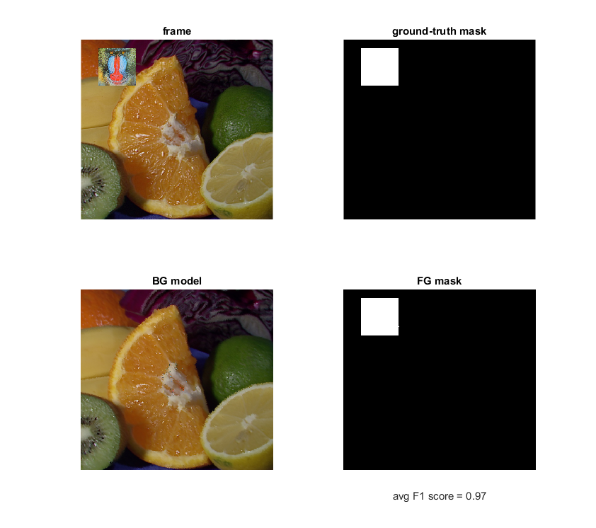

Evaluation of background subtraction algorithms on synthetic sequence
Sources:
several presets with different settings are available, tradeoff between quality metrics and speed.
if true % GSOC bs = cv.BackgroundSubtractorGSOC(); elseif true % GSOC-camera-motion-compensation bs = cv.BackgroundSubtractorGSOC('MotionCompensation','LK'); elseif true % LSBP-vanilla bs = cv.BackgroundSubtractorLSBP('NSamples',20, 'LSBPRadius',4, ... 'TLower',2.0, 'TUpper',200.0, 'TInc',1.0, 'TDec',0.05, ... 'RScale',5.0, 'RIncDec',0.05, 'LSBPThreshold',8); elseif true % LSBP-speed bs = cv.BackgroundSubtractorLSBP('NSamples',10, 'LSBPRadius',16, ... 'TLower',2.0, 'TUpper',32.0, 'TInc',1.0, 'TDec',0.05, ... 'RScale',10.0, 'RIncDec',0.005, 'LSBPThreshold',8); elseif true % LSBP-quality bs = cv.BackgroundSubtractorLSBP('NSamples',20, 'LSBPRadius',16, ... 'TLower',2.0, 'TUpper',32.0, 'TInc',1.0, 'TDec',0.05, ... 'RScale',10.0, 'RIncDec',0.005, 'LSBPThreshold',8); elseif true % LSBP-camera-motion-compensation bs = cv.BackgroundSubtractorLSBP('MotionCompensation','LK'); elseif true % MOG2 bs = cv.BackgroundSubtractorMOG2(); elseif true % KNN bs = cv.BackgroundSubtractorKNN(); elseif true % MOG bs = cv.BackgroundSubtractorMOG(); elseif true % GMG bs = cv.BackgroundSubtractorGMG(); else % CNT bs = cv.BackgroundSubtractorCNT(); end
initialize frame sequence generator
bg = imread(fullfile(mexopencv.root(), 'test', 'fruits.jpg')); fg = imread(fullfile(mexopencv.root(), 'test', 'img001.jpg')); fg = cv.resize(fg, [100 100]); gen = cv.SyntheticSequenceGenerator(bg, fg);
prepare UI
[frame, gtMask] = gen.getNextFrame(); subplot(221), hImg(1) = imshow(frame); title('frame') subplot(222), hImg(2) = imshow(gtMask); title('ground-truth mask') subplot(223), hImg(3) = imshow(frame); title('BG model') subplot(224), hImg(4) = imshow(gtMask); title('FG mask')
main loop
f1 = 0; count = 0; for n=1:400 % grab new frame and ground-truth mask [frame, gtMask] = gen.getNextFrame(); % background subtraction mask = bs.apply(frame); try im = bs.getBackgroundImage(); catch % some algorithms dont implement a BG model (MOG, GMG) im = []; end % show results set(hImg(1), 'CData',frame) set(hImg(2), 'CData',gtMask) set(hImg(3), 'CData',im) set(hImg(4), 'CData',mask) drawnow % give the algorithm some time for proper background model inference. % Almost all background subtraction algorithms have a problem with cold % start and require some time for background model initialization. % So we will not count first part of the frames in the score. if n > 300 tp = nnz(cv.bitwise_and(mask == 255, gtMask == 255)); fp = nnz(cv.bitwise_and(mask == 255, gtMask == 0)); fn = nnz(cv.bitwise_and(mask == 0, gtMask == 255)); if (tp + fn + fp) > 0 f1 = f1 + 2*tp / (2*tp + fn + fp); count = count + 1; xlabel(sprintf('avg F1 score = %.2f', f1 / count)) end end end